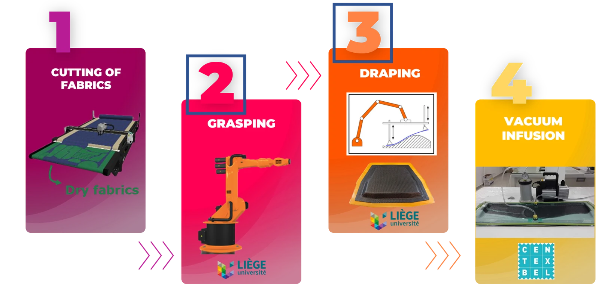
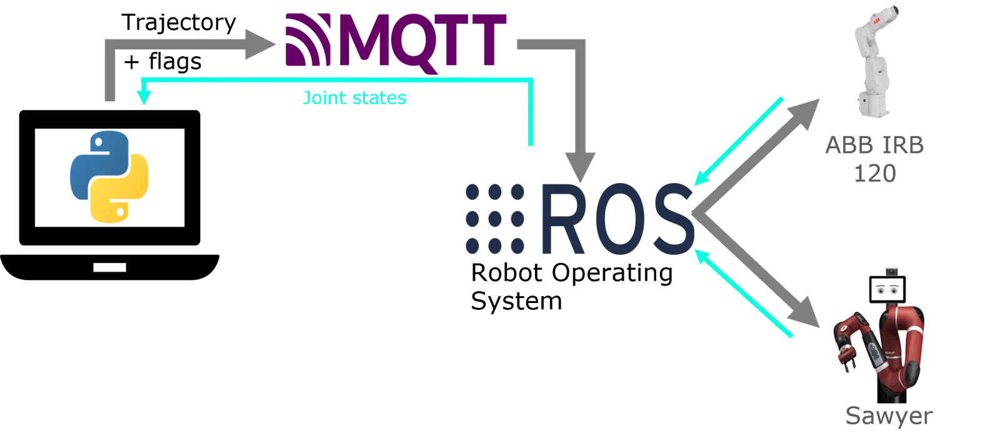
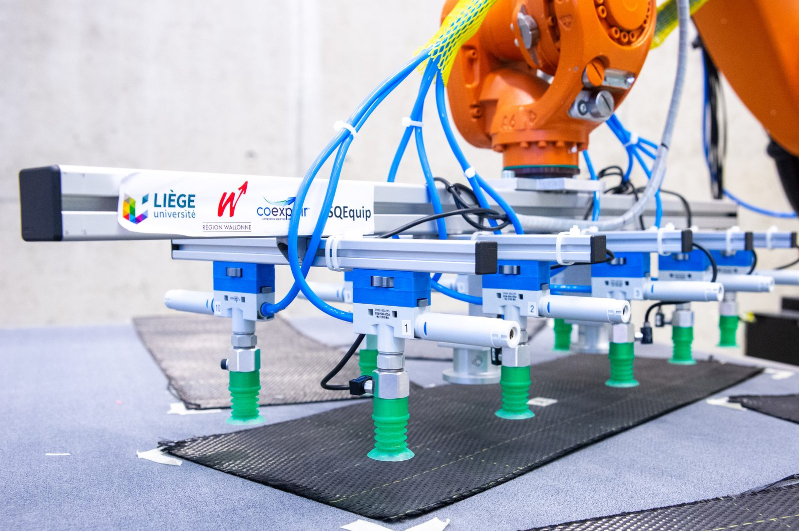
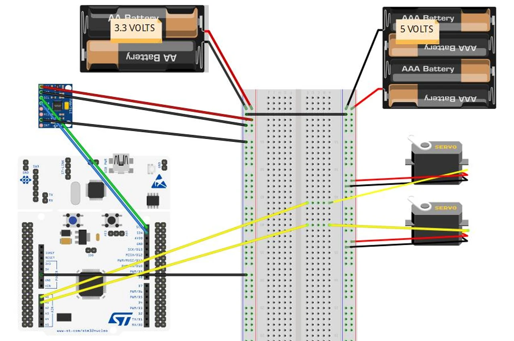
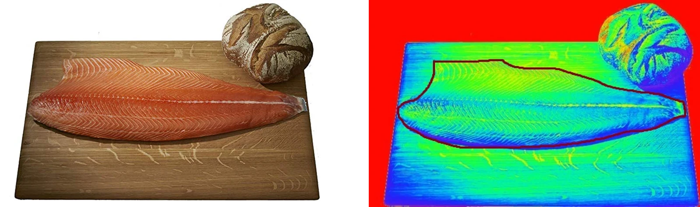
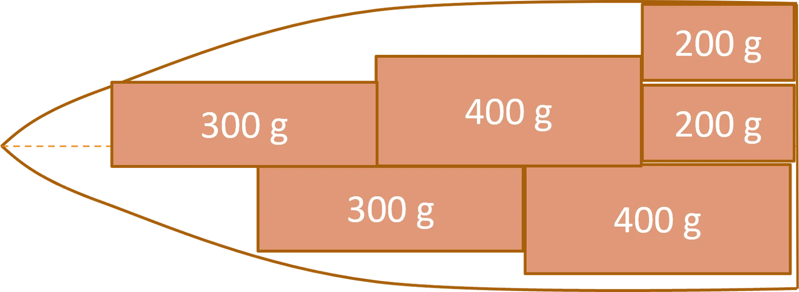
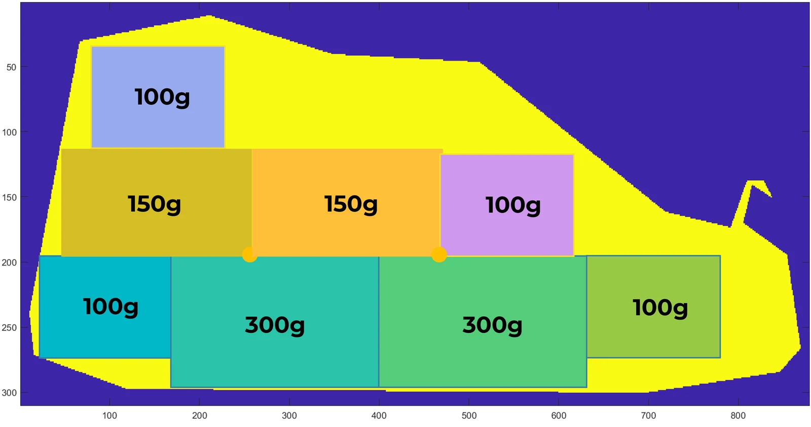

Projects
Engineering projects I have designed and built, from a two robot cell for composite manufacturing to embedded systems.
2020 to 2023, Interreg Euregio Meuse-Rhine
Robotic draping of composites (AACOMA project)
Composite parts are still largely made by hand: dry fabric plies are cut, picked up, draped onto a mold and then infused with resin. AACOMA (Accelerate Advanced Composite Manufacturing) was a European Interreg project that aimed to make this process easier and more effective. The University of Liège led the demonstrator on robotics and augmented reality for composite manufacturing.
I engineered a functional two robot demonstrator that drapes fabric onto 3D molds. An ABB industrial robot holds the ply and keeps it taut, while a Sawyer collaborative robot presses it onto the mold.
My contributions
- Coordination of two robots of different brands with Python, ROS and MQTT, including real time collision checks.
- Programming by demonstration: the draping motion of the cobot is taught by hand guiding.
- Design of custom grippers and tools adapted to dry fabrics.
- Lead of the "Robotics and AR" work package, in coordination with the industry partners.



2021
Autonomous SLAM and grasping
A complete autonomy stack for a KUKA youBot mobile manipulator, developed in the CoppeliaSim simulator. The robot explores an unknown environment, builds a map of it, then finds, grasps and moves objects.
- Simultaneous localization and mapping from LIDAR data, with odometry and Kalman filtering.
- Path planning and path following through the mapped environment.
- Object grasping based on 3D camera data.
2020
Embedded platform stabilizer based on an IMU
A platform that stays level while its support moves. An STM32 microcontroller, programmed in C, processes inertial measurements in real time through filtering algorithms and drives servo motors to compensate for the motion.
- Embedded C programming on STM32: timers, PWM generation and sensor communication.
- Real time filtering of the IMU data.
- Design and soldering of the supporting electronics.

2020, with SalmInvest (Belgium)
Nesting optimization for salmon portioning from 3D scans
An industrial project on cutting salmon fillets into portions of prescribed weights with as little waste as possible. Each fillet is scanned in 3D, and a genetic algorithm implemented in MATLAB searches for the best arrangement of the portions on the measured shape.



2019
Water cleaning surface vessel
A small boat that collects floating debris. I designed its mechanics, integrated and controlled the brushless and stepper motors for propulsion and debris collection, and developed a mobile application to operate it remotely.